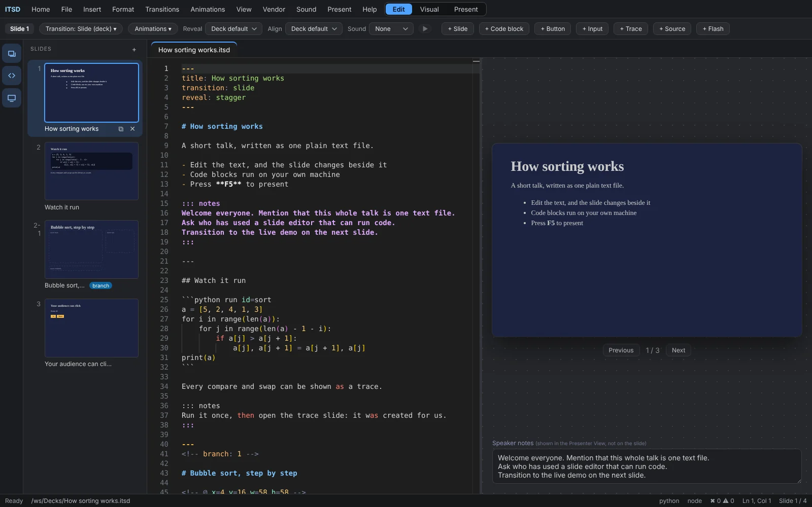
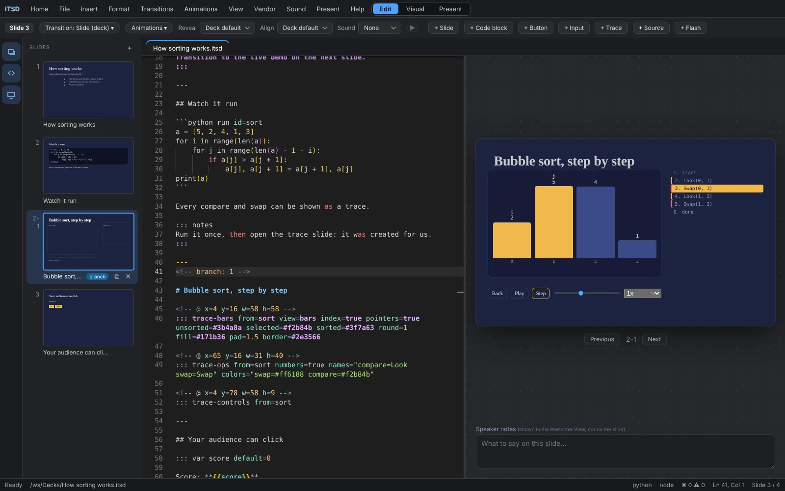
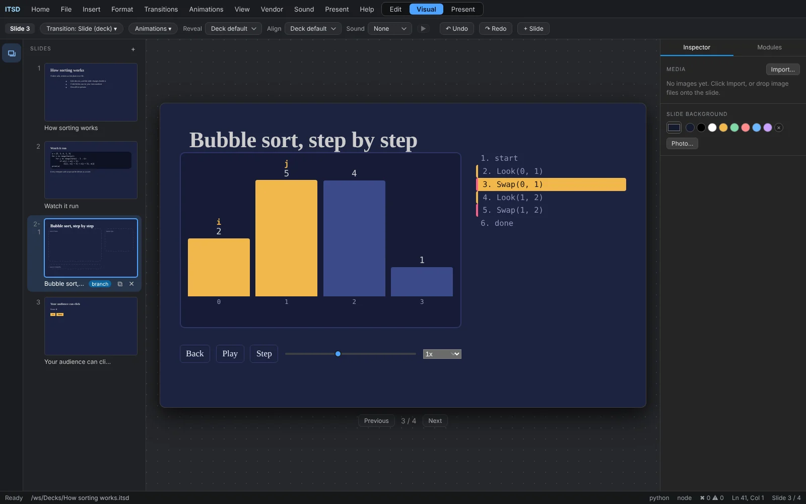
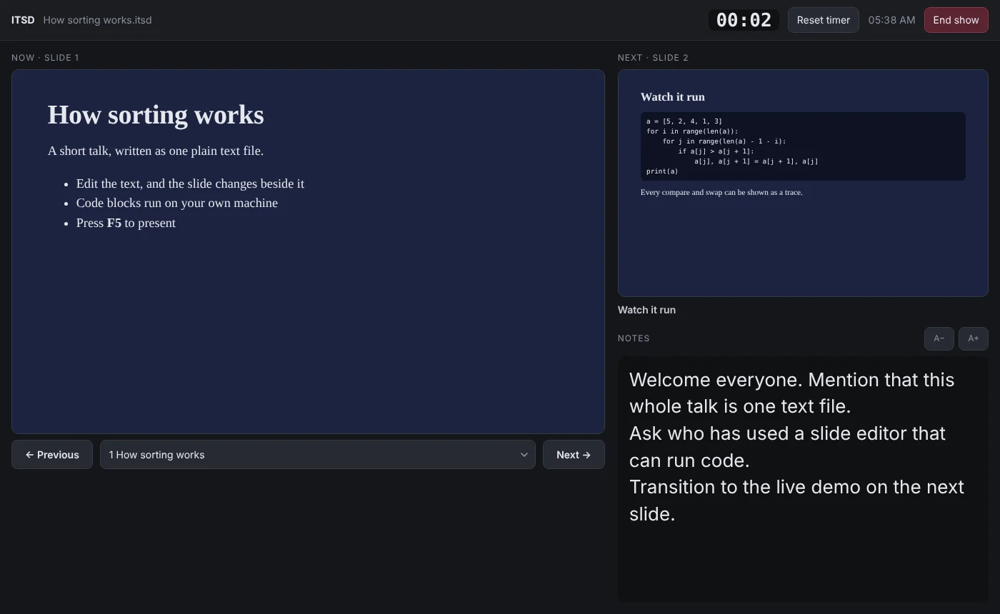
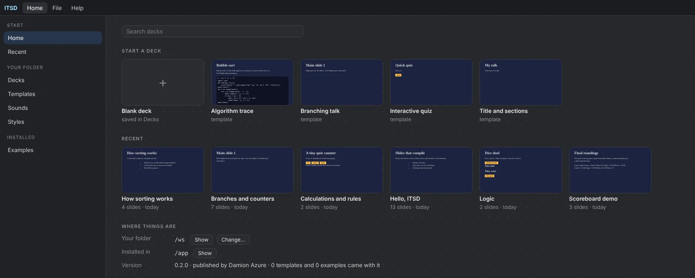
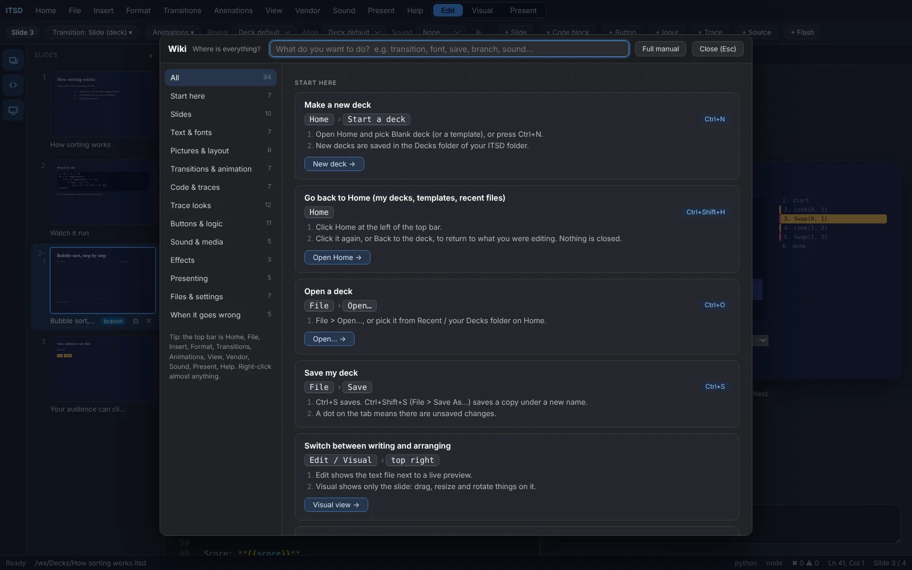

Run it, then show it
A run can produce a trace slide on its own. It branches off the slide you wrote, so you can restyle it without touching your code.
- Bars, dots, grid, stack, tree and ring views
- Names and colours for each step
Download the latest ITSD editor for your platform. Your decks stay as plain files, presentations work offline, and signed updates arrive without making you hunt for an installer.

Loading installers…
ITSD is a slide editor built around a text file. You type Markdown, the slide appears beside it, and anything that can be run or clicked stays live while you present.
Headings, lists, images and code blocks become slides. Separate slides with ---.
Mark a block to run it. Output shows up on the slide, and your audience sees it happen.
Turn a run into bars, grids, trees or a step list, and style every part of it.
Variables and buttons let people change a slide while you present it.
Speaker notes, the next slide and a timer on one screen, the audience on another.
Press F2 for a searchable guide to every option, right inside the app.
Screenshots from the editor itself.
A run can produce a trace slide on its own. It branches off the slide you wrote, so you can restyle it without touching your code.

Drag and resize anything on the slide. The position is written back to your text, so the file stays the source of truth.

Start the show with F5, and open the presenter view on a second screen.

The home screen lists every deck in your workspace, with a live preview of each.

The wiki explains each option with an example you can copy.

This is a real slide. Open it in any editor, keep it in git, send it in an email.
# How sorting works - Edit the text, the slide changes - Press F5 to present ::: notes Ask who has used a slide editor that can run code. ::: ```python run id=sort a = [5, 2, 4, 1, 3] a.sort() print(a) ``` ::: trace-bars from=sort view=bars